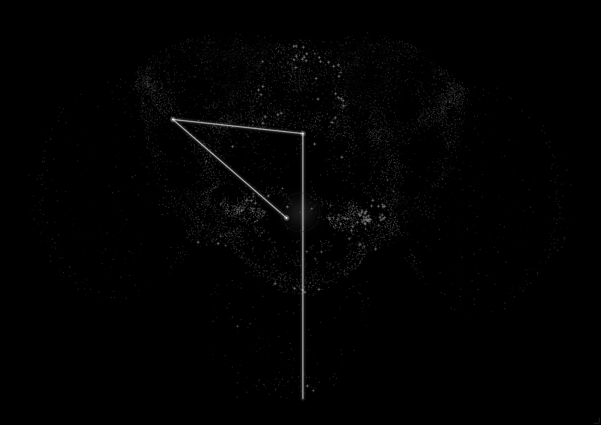
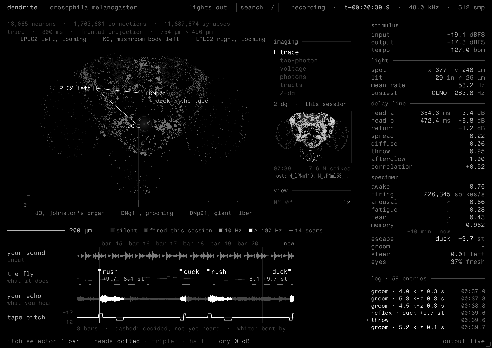
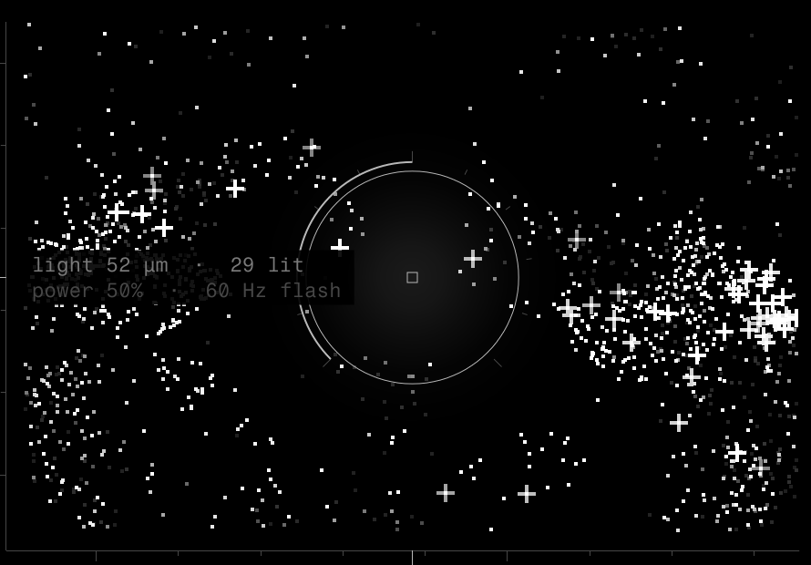
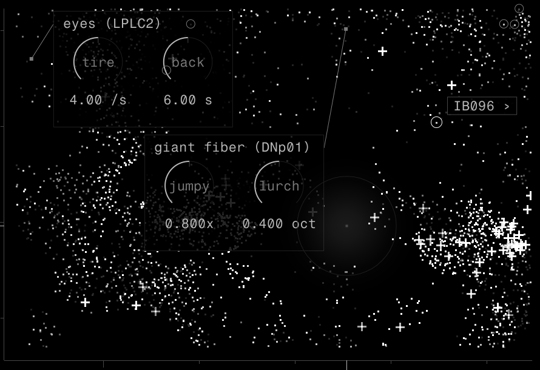
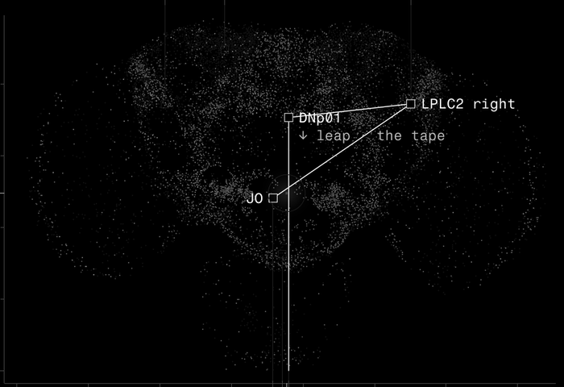
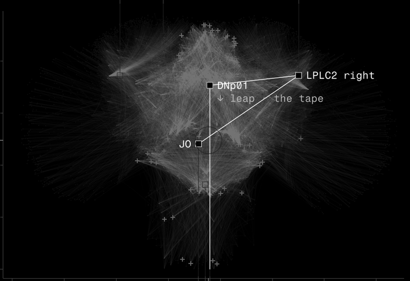
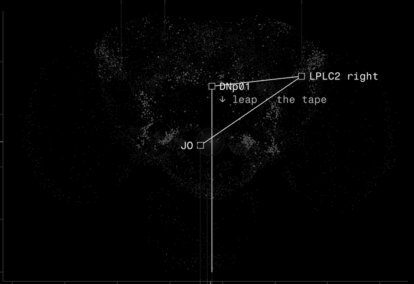
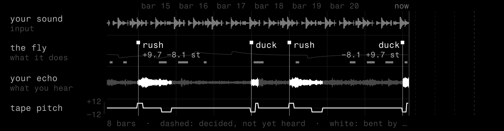
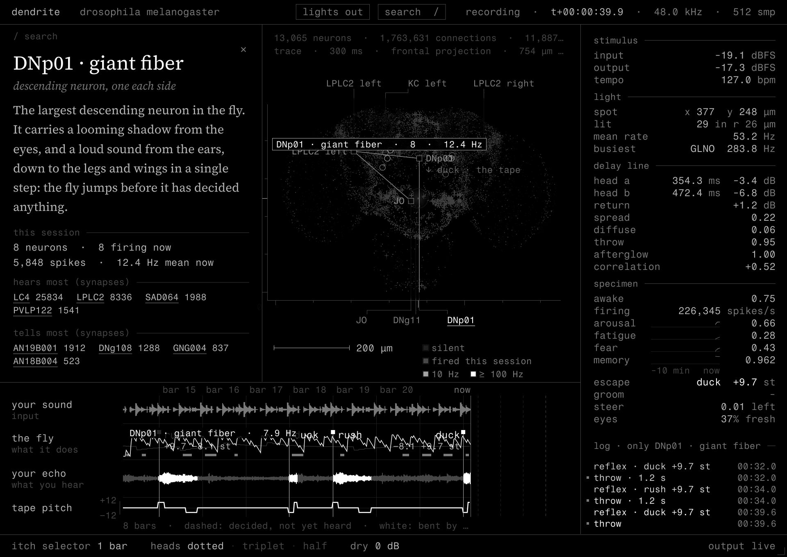
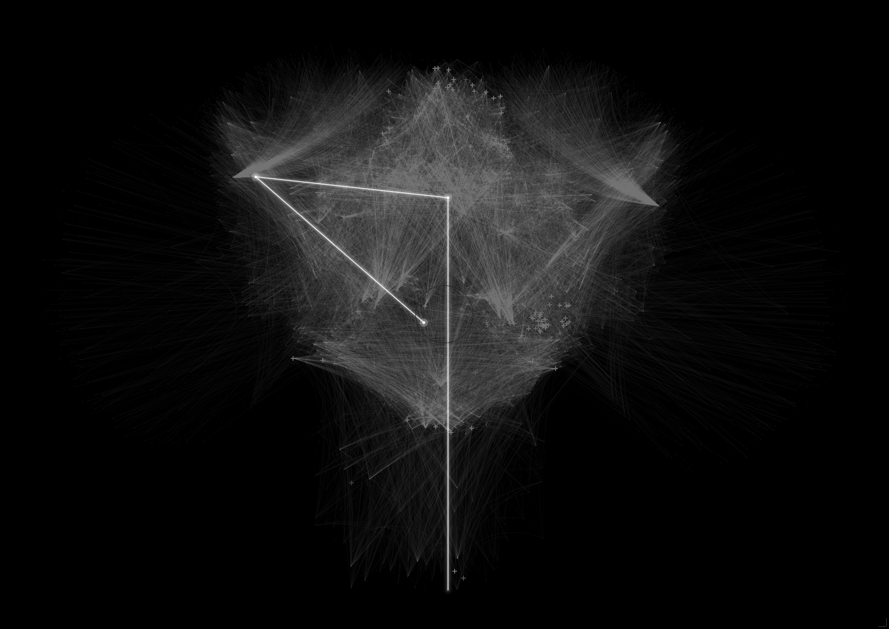

A preparation. Janelia mapped one fly's brain, and dendrite plays your music to it. Two tape heads carry the music back to you, and each pass lands a little further out. The fly listens. Sometimes it reaches in.
This manual describes version 3.7. We read every number in it from the plug-in itself. Where we measured something, it says where. Where we do not know something, it says that too.
Put it on the track itself, as an insert. There is no send to set up and no mix knob. Your dry track passes through untouched, and the echo is added to it.
On a return track, turn dry off in the bottom line. Only the echo comes out.
Press play in your host. The defaults already work: feed at 50% (dub), space at 40% (around), the itch selector at 4 bars and the heads on dotted. The echo follows the host's tempo. When the host is stopped, it runs on a clock of its own.
Wait for the last hit of a phrase. Press the brain anywhere away from the light, and hold. That hit goes into the echo, louder, and stays there while you hold. Let go and it falls back over about two bars.
The round spot on the brain is the light. Drag up or down inside it: the repeats live longer or shorter. Drag its edge: they spread further around your head, or stay close. Double-click it to go back to the defaults.
That is the instrument. The rest of this manual is what the window shows, and what lives inside the itch.
install, windows
run the installer. it puts dendrite.vst3 in C:\Program Files\Common Files\VST3 and removes an old viber.vst3.
install, macosdendrite.vst3 to ~/Library/Audio/Plug-Ins/VST3, dendrite.component to ~/Library/Audio/Plug-Ins/Components. the mac builds are not signed: clear the quarantine flag once (the readme has the line).
in live
settings › plug-ins › use vst3 plug-in system folders, then rescan. it sits under plug-ins › vst3 › afferent › dendrite.
latency
none. it reports 0 samples.

Every number on the screen is measured. Nothing is drawn for decoration. Hover any line and it says what it measures. The window opens at 960 × 680, shrinks to 900 × 640, and grows to any size up to 7680 × 4320. The column on the right keeps its width; the specimen and the trace take the rest.
There is one loop of tape and two playback heads. With the heads on dotted, the first reads a dotted eighth behind, the second a quarter behind. Both feed back. So every repeat splits in two, and the repeats land on the 3rd, 4th, 6th, 7th, 8th sixteenth and on. The echo thickens into its own space. There is no reverb in it.
The loop runs in mid/side. The dotted head keeps the side as it is. The quarter head flips it to the other side. Neither of them touches the mid. So the mid is a plain branching dub echo, and nothing done to the side ever reaches it.
Sum the output to mono and you hear your dry track plus a clean dub echo, whatever the space is doing. The audit measured the side's leak into mono between −133 and −142 dB.
The space lives in the side. Every pass writes a little of the mid into the side again, so each generation of repeats steps a little further out from the middle of your head. The crossed branch mirrors it. This is the dendrite: it grows.
The bottom line has three rhythms. Click the one you want.
| heads | head a | head b | at 120 bpm |
|---|---|---|---|
| dotted | dotted ⅛ | ¼ | 375 ms · 500 ms |
| triplet | ¼ triplet | ¼ | 333.3 ms · 500 ms |
| half | dotted ¼ | ½ | 750 ms · 1000 ms |
Dotted is the dub classic. Triplet walks the echo in threes against the beat. Half is the same shape slowed to half time.
the tape
the tape has wow, and it moves both heads together, as a real tape's speed does. a long tail does not cancel itself.
the diffusers
they delay what they smear, so the heads read that much earlier. the repeats land on the beat pass after pass.
head a, head b
the instruments read each head's time in ms and its gain per pass in dB, as they are now.
Feed is how much of the echo goes round again. It passes through five regions. A small turn near a border tips the sound into the next one.
| feed | name | what happens |
|---|---|---|
| 0 – 1% | off | nothing goes round. Only what you throw gets in: the dub engineer's closed send. |
| 2 – 29% | whisper | a few repeats, gone within a bar or two. |
| 30 – 61% | dub | the home of it. Repeats walk away and keep their shape. |
| 62 – 86% | drown | the tail outlives the phrase. Chords pile into each other. |
| 87 – 100% | endless | the loop sings. Held by saturation inside the loop and a limiter at the output. |
Space is how far each pass is pushed to the sides and how much it is smeared. It never changes the mono sum.
| space | name | what happens |
|---|---|---|
| 0 – 19% | inside | the repeats stay in the middle of your head. |
| 20 – 49% | around | each pass steps out a little, and the crossed one mirrors it. |
| 50 – 77% | envelop | allpasses in the side's loop. Each repeat dissolves further into the space between your ears. |
| 78 – 100% | beyond | a small frequency shift in the side's loop. The space turns around your head and rises, like a barber pole. |
The instruments read the two halves of it: spread (0 to 0.34, how far each pass is pushed out) and diffuse (0 to 0.7, how much each pass is smeared).
The echo ducks under your playing and blooms in the gaps. It also swells on its own, slowly, by up to about 3 dB. When the music stops, the feedback rises for a while (the fill), then lets go over about two bars, and the loop eases off over the next four. A tail in a break dissolves over about five bars. It never falls faster than 3 dB a beat.
A ceiling keeps the loop from outgrowing what was played into it. Saturation sits inside the loop. A limiter sits at the output. Feed may self-oscillate at endless, and you can push it further with a throw. You cannot wreck a pair of speakers with it.
dry is on at 0 dB, or off for a return track. output on the far right is not a control. It says live, or bypassed · recording when the host bypasses the plug-in. Bypassed, the output goes dry and the specimen keeps recording.
In optogenetics a neuron carries a channel that opens to light. Light on it, and it fires. The brain in dendrite carries CsChrimson, which answers to orange-red light. A spot of it sits on the brain. The spot is how you play the echo.

Drag up or down inside the spot. Or turn the wheel over it. Up: the repeats live longer.
off · whisper · dub · drown · endlessDrag the spot's edge. It runs from 8 µm across, one neuron, to 150 µm across, on a log scale. Wider: the repeats live further out. Shift with the wheel over the spot changes the size too.
inside · around · envelop · beyondDrag the small square in the middle to put the light over other neurons. That changes nothing in the echo on its own. It changes which neurons fire when you flash (next page). The light's place is saved with the set.
shift
while dragging: fine, a fifth of the speed.
double-click the spot
feed and space back to 50% and 40%.
automation
the light is the same two parameters, feed and space, as every version before it. automate them as usual.
the instruments
spot: its centre in µm. lit: how many neurons, in what radius. mean rate: theirs, over 300 ms. busiest: the busiest of them, by cell type.
A throw is the dub engineer's move: a moment sent into the echo and left there.
Press the brain anywhere off the light, and hold still. After 80 ms the press becomes a throw. The send opens at once. What is playing goes into the delay line, louder, and the image is pushed out to one side. The feedback rides up while you hold.
Let go. The throw falls home over about two bars.
At endless, hold on. The loop grows past what was played into it, into a howl the tape itself holds. Let go before it eats the room. It comes back like any throw.
At feed off the throw still rings for about two bars. Only what you throw gets in. That is a closed send.
If the hand moves more than 4 pixels before 80 ms pass, it is not a throw. The hand has the brain, and turns it.
A throw is also a flash of the light. While you hold, the neurons under the spot fire, at 20 Hz with the light at no power, up to 100 Hz at full. They fire as the senses fire theirs, at random moments (Poisson), on the audio thread.
So where the light sits changes what the fly does next. Light the giant fiber and hold, and it leaps. Light the grooming neurons and it grooms. With no flash, nothing extra runs, and the light changes nothing but feed and space.
When the fly's giant fiber fires, the fly throws the moment into the echo the same way. The instruments' throw reads the envelope in the loop, 0 to 1, whoever threw: your press, the host's automation, or the fly.
map it to a keythrow is a parameter. in live: configure on the device, touch the throw so it appears, and map that slot to a key with ctrl+k.
in the logthrow · 1.3 s: how long it was held.
runaway
a throw held long at endless is logged as a runaway, with its length.
The itch is a fly's nervous system. We designed nothing about its wiring.
Janelia mapped the whole central nervous system of one male fly, synapse by synapse (Berg et al. 2026). dendrite runs the part of it that answers music: 13,065 neurons, 1,763,631 connections, 11,887,874 synapses. Each neuron is a leaky integrate-and-fire neuron. Each connection is as strong as its synapse count, excitatory or inhibitory by its transmitter. This is how Shiu et al. (2024) ran the whole fly brain. It runs live, on the audio thread, at the sample rate of your session.
Its ears. Johnston's organ, in each antenna, hears the antenna move. Your left channel is its left antenna. Low vibration, sound, and the slow push of the level reach different groups of its neurons.
Its eyes. Your hits loom at it: lows from below, highs from above. The looming neurons (LPLC2) of each eye answer. They are the giant fiber's main input.
Its smell. The spectrum, as a few channels of its antennal lobe, reaches the mushroom body. There, a sparse set of Kenyon cells says what this sound is.
Every sense tires when the same thing keeps coming, and it recovers slowly. So the fly learns a loop and startles at what is new.
Every neuron is a little restless: small random kicks, as real neurons have. Two moods move slowly. Arousal is wound up by its own jumps and settles over about 40 s. Fatigue is worn by busy music over about two minutes.
And it remembers. When it jumps, its punishing dopamine neurons (PPL1) fire. Where dopamine meets a Kenyon cell that was just active, that cell's synapses onto the mushroom body's output neurons weaken. A moment later its reward neurons (PAM) fire: relief. So the sounds that made it jump stop sounding safe, and the ones that passed become safe again. Fear is the balance of the two. It forgets over about ten minutes.
a cut
13,065 of the male's 144,076 brain neurons: its ears, eyes, giant fiber, grooming and steering neurons, mushroom body and smell, and what lies between them.
memory
its 28,761 learning synapses (kenyon cell to mbon). the instruments read them against their strength at birth.
saved with the set
the memory and the moods, about 57 KB. the same fly remembers your session next time. it wakes rested.
what we do not know
what wakes it is mostly how hard the hits land. a real fly's brain was not built for music. we listen, and report.
The giant fiber (DNp01) is the largest descending neuron in the fly. It carries a looming shadow from the eyes, and a loud sound from the ears, down to the legs and wings in a single step. When it fires, the tape lurches, and the moment is thrown into the echo.
The brain decides when and how hard. The body does it on the grid. Every move starts on a 16th line (an 8th when the fly is half awake) and lasts an exact note value. Its fear and its arousal choose the move.
| move | when | what the tape does |
|---|---|---|
| hop | a small jump | up for a 16th, back over an 8th. |
| leap | a big jump | further up for a 16th, back down over a dotted 8th. |
| duck | a small fall | down for an 8th, back up in a 16th. |
| rush | wound up | up an octave for an 8th. The echo runs in double time for a beat or two and falls back over a quarter. |
| dive | afraid | down over a half note into half time, holds its breath for a beat, climbs back over a quarter. |
| hold | no pulse | the tape stays. A dotted 8th is thrown and the breath is held for a beat. |
| sink | no pulse | both heads fall by pure intervals for an 8th, then snap back in a 32nd. |
How far the tape bends is the atlas's lurch (page 12). At its default the bends are about an octave, and a leap goes further. The trace prints the tape speeds a move went through, and the log its furthest pitch. On the groove in this manual a leap read +15.9 st, and a duck −8.1 +9.7 st: it went down, and its fast return reads as a rise.
It hears whether there is a pulse: how many 16ths of the last two bars had a hit at the top of the spectrum. In a groove it dances. On bare chords it rests about five times longer, never rushes or dives, and half its moves are a hold.
The grooming neurons (DNg11) drive the front legs to clean the antennae. When they fire, a narrow band of the echo is rubbed back and forth, at a frequency where your music leaves room. The log says groom · 4.2 kHz 0.4 s.
The steering neurons, DNa01 and DNa02 on each side, turn a fly toward one side. Their imbalance leans the echo's space and steers the echo toward that side, up to about 9 dB between the sides. Mono is untouched.
What the fly throws goes onto a tape of its own, fed by the dotted head. The first repeats land like a throw. It keeps feeding itself for about three bars, then dissolves smoothly, with no corner where it stops. Each pass is a little darker, more blurred, further out. Inside it, every partial is shifted by the same few hertz on every pass (6 Hz, growing to 12 as it fades). The tail climbs like a barber pole after a rising move and sinks after a falling one. It is gone about nine bars after the itch. The instruments' afterglow reads how much is still sounding.
The itch selector is in the bottom line. Click it and its scale opens in place: off, then ¼ bar to 8 bars. Wide awake is on the left. Click a value, or drag along the scale. The wheel steps through it, and so do the arrow keys. Escape, a click on its name, or a moment without the hand folds it away.
Next to the choice it says how awake that keeps the fly.
| itch selector | awake | itch selector | awake |
|---|---|---|---|
| off | rests | 1½ bars | 0.68 |
| ¼ bar | 1.00 | 1¾ bars | 0.65 |
| ½ bar | 0.88 | 2 bars | 0.62 |
| ¾ bar | 0.80 | 3 bars | 0.55 |
| 1 bar | 0.75 | 4 bars default | 0.50 |
| 1¼ bars | 0.71 | 8 bars | 0.38 |
Awake, the fly moves on 16ths and leaves the music alone for about a beat after each move. When it is half awake, it moves on 8ths and leaves about a bar. At ¼ bar a move lands within a 16th of being decided. At 1 bar and slower a big move waits for the bar line.
Off: the fly rests and its brain does not step. Nothing it does reaches the echo, and it costs almost nothing. The echo, the light and the throw work as before.
While the host plays, the trace shows one bar after now, dashed. That is what the fly has decided and not played yet. A hollow square marks where the move will land, with the bar and beat, how soon, and its size: armed.
Click the armed move to hold it back. It does not play, and the fly's rest starts again. The log says held back · the move for bar N.
the parameter
its host name is itch selector; its id stays frames, so old sets and automation keep it.
one story
when the fly bends your echo, the path that made it lights on the brain for two seconds: the ears (jo), the eye whose looming fired (lplc2 left or right), the giant fiber (dnp01), down to the tape, named with the move. hover a reflex in the trace and it lights again.
the scars
at each reflex the 64 neurons firing hardest are burned into the brain as crosses. white when made, settled to grey within a minute, never removed. saved with the set.
A brain atlas names its regions. Magnify the brain to 2.5× or more and five regions open small cards beside them, with the fly's own numbers. Drag a number up or down. The wheel steps it, shift finer. Double-click it and it goes back to where the fly was born.
They are eight automatable parameters. Each range is centred on the fly's default, so the middle of the travel is the fly as it came. A set that never moves them sounds as it did before they existed.
slow numbers
these change a temperament, not a sound. give each a few bars to show itself.
| region · name | range | default | what it does |
|---|---|---|---|
| mushroom body · learn | 0 – 0.3 | 0.075 | how fast what hurt it becomes fearful. |
| mushroom body · forget | 60 – 3600 s | 640 s | how many seconds its synapses take to drift back. |
| giant fiber · jumpy | 0.2 – 2.5× | 0.800× | how easily it fires. At 0.2 it almost never jumps; at 2.5 it jumps half again as often. |
| giant fiber · lurch | 0 – 1 oct | 0.400 oct | how far a jump bends the tape. 0: never, a jump only throws. Low: the small moves bend by a fourth or a fifth. 0.4: an octave, and the big jumps wait for a bar line. Higher: more jumps are big, and they hold and throw longer. |
| grooming · scratch | 0 – 2 | 0.950 | how hard it scratches. 0: it never grooms. 2: it grooms most of the time. |
| steering · lean | 0 – 1 | 0.450 | how far its steering leans the space and steers the echo. 0: never. |
| eyes · tire | 0.5 – 16 /s | 4.00 /s | how fast the looming eyes tire of hits. High: after a few bars of groove it goes blind to it, and quiet. |
| eyes · back | 1 – 30 s | 6.00 s | how long the eyes take to recover. Short: it wakes to every change. Long: one busy passage leaves it blind for bars. |

dendrite has a sidechain input, mono or stereo, off until the host routes something into it. Give it your kick. Only the hits count. The sidechain is never heard and never enters the echo.
On the kick's track, nothing. On dendrite's device, open the sidechain section and set audio from to the kick's track.
It sees each hit loom. A hit's strength is its peak over 10 ms against the recent loudest hit. It looms in both of the fly's low eyes, at most as hard as a looming in the music gets, and tires them as any looming does.
It gets used to your kick. One expectation per 16th of the bar remembers where hits come. A hit where hits always come barely startles it. A hit where none came, a fill or a ghost note, startles it hard, and so does the kick coming back after a break. Steady four on the floor goes from a full startle to about a quarter within 2 bars. Everything is forgotten over about 16 bars.
A big startle is an escape. Above three quarters, the fly jumps on the next line, past its rest.
The echo ducks under each hit. Never the dry. Down in 1 ms, held 15 ms, back over 80 ms when the fly is wound up and 500 ms when it is calm. Depth: 2 dB, plus up to 6 dB from its fear, plus up to 6 dB from how unexpected the hit was, times the hit's strength. 12 dB at most. With the itch off the duck is gentle, about 3 dB.
A kick hit also counts as a hit of the groove. So on bare keys with a kick under them, the fly feels inside a groove, and can dance.
no sidechain
with no sidechain, or a silent one, the output is identical to the bit to a build without it.
onsets only
a 1 ms follower finds each hit: the boom (30 Hz to 5 kHz) or the beater's click above 800 Hz, so a ghost note under the last kick's boom still counts.
in the trace
each hit is a tick at the top of your sound. white when it startled the fly. a jump the kick caused lights its own path on the brain, labelled kick.
The rail's imaging list picks how the brain is shown. Every method shows the same spikes. Each one remembers them differently. The legend and the caption under the brain change with it and say what each grey means.



| method | what it shows |
|---|---|
| trace | Each neuron as bright as its firing over the last 300 ms, on a log scale (1 Hz dim, 100 Hz white), over this session's exposure: every spike leaves its neuron a little brighter for good. The only method that shows the exposure and the scars. The default. |
| two-photon | Calcium, GCaMP6s, read as ΔF/F: each neuron against its own last 20 s, white at +100%. What fires steadily goes dark. Only a change lights: what the last bar woke up. |
| voltage | ASAP2f dims when the membrane fires and forgets in 2.5 ms. Every neuron glows at rest, and a spike in this frame darkens it. |
| photons | Photon counting: each spike of the last second is one grain, within 3 µm of its neuron. |
| tracts | The 25,000 busiest connections now (synapses times the sender's spikes in the last second) as curves, over a faint skeleton of the strongest wiring. The curves are drawn. The links are real. |
| 2-dg | 2-deoxyglucose: a sugar a neuron takes up and cannot burn. Grey where your music worked a neuron at all. Bright where it worked it more than twice what ordinary music does, measured on six ordinary sounds. This session only. |
Each picture above carries the path of the fly's last move: ears, eye, giant fiber, tape. It shows for two seconds after every move.
Under the list, a small 2-DG brain shows this session's uptake, the session clock and its spike count. It is never saved: one film per session. Press it and the plate plays how the uptake built up, from the first second to now, in 8 seconds. It names the cell types that took up most.

| row | what it draws |
|---|---|
| your sound | the input. Your throws are marked under it. With a sidechain, each kick is a tick at its top. |
| the fly | a square and a line for each reflex, with its move and the tape speeds it went through. Grey ticks where it groomed. A faint line for its steer. When something is in focus, its mean rate. |
| your echo | the echo alone, without your dry. White where a reflex bent the tape. |
| tape pitch | the tape's speed in semitones, from −12 to +12. 0 is the echo as you set it. |
Levels are linear: a full row is 0 dBFS. While the host plays, the axis is the last 8 bars, numbered. When it stops, the trace shows the last 16 seconds and says host stopped.
Hover anywhere for the bar, the levels, the tape speed and the move at that moment. Hover a reflex and the path that made it lights on the brain again. Click a reflex to open it in the reference.
Each mark is measured. The engine reports each block's loudest input and echo sample and its clock, and hands them to the window without a lock. The window keeps the last minute in 10 ms bins.
| line | unit | what it reads |
|---|---|---|
| stimulus | ||
| input | dBFS | the track's level, rms over 300 ms. What the fly hears. |
| output | dBFS | what leaves the plug-in, rms over 300 ms, after the limiter. |
| tempo | bpm | the host's tempo, and whether it plays. |
| light | ||
| spot | µm | the light's centre, from the box's left and bottom edges. |
| lit | n in r µm | the neurons under the light, and its radius. |
| mean rate | Hz | their mean firing over the last 300 ms. |
| busiest | type · Hz | the busiest neuron under the light, by cell type. |
| delay line | ||
| head a, head b | ms · dB | each head's delay, and its gain on each pass round the loop. |
| return | dB | the echo coming back into the output now, with its ducking and breath. |
| spread | 0 – 0.34 | set by space: how far each pass is pushed to the sides. |
| diffuse | 0 – 0.7 | set by space: how much each pass is smeared. |
| throw | 0 – 1 | the throw's envelope in the loop: a press, automation, or the fly. |
| afterglow | 0 – 1 | how much of the last itch's afterglow is still sounding. |
| correlation | −1 – +1 | the output's left/right correlation over 300 ms. +1 mono, 0 wide, below 0 out of phase. |
| specimen | ||
| awake | 0 – 1 | how awake the itch selector keeps the fly. At rest when it is off. |
| firing | spikes/s | the whole cut brain's spikes per second, now. |
| arousal | 0 – 1 | how wound up it is. Each escape winds it; it calms over about 40 s. |
| fatigue | 0 – 1 | how tired: how busy its brain has been over about two minutes. |
| fear | 0 – 1 | how much of what it smells now once hurt it. |
| memory | share | its 28,761 learning synapses against their strength at birth. |
| escape | move · st | the giant fiber fired: the move, and the tape's speed now in semitones. |
| groom | kHz | the band it scratches. |
| steer | 0 – 1 · side | how far it leans now, and which way, the atlas's lean included. |
| eyes | % fresh | its looming eyes: 100% rested, lower as hits tire them. |
Arousal, fatigue, fear and memory draw their last ten minutes beside the number. There is no decay time. A formula from the heads' gains alone would ignore the tape's losses and call a dying tail sustained.
The log writes down the session, newest at the bottom, with the session clock. A reflex with its move and furthest pitch. A groom with its band and length. A throw and a runaway with their length. Every switch the hand or the host turns. Input lost, and back. A move held back.
Click a line to open it in the reference. When something is in focus, the log keeps only its lines and says so: log · only DNp01 · giant fiber.
dendrite keeps the last minute. It records about 60 seconds on two tapes: everything it plays, and the itch on its own, with no dry and no echo. Next to that it keeps a diary of every itch, throw and runaway.
A line with a small square in front of it is still on tape. Drag the line into Live. You get that take, cut from the bar line before it to the bar line after its tail. For an itch, that is the itch alone. Hold shift to get everything that played over those bars.
A line older than the last minute loses its square. It is no longer on tape.
the filesDocuments/dendrite/kept/
32-bit float wav, a whole number of bars, tempo and metre in the acid chunk. never deleted by dendrite.
the namesdendrite · 2 bars · 124 bpm · 21-43-07.wav
the clock time is when it happened.
live on windows
dendrite gives live's window the focus before a drag starts. live can crash when another window has it.

Press /, or ctrl+F (cmd+F on a Mac), or click search / in the header. A field opens over the left of the brain. It finds the window's own words (stimulus, feed, two-photon, jumpy) and every cell type in the fly (DNp01, LPLC2, KCg-m). Arrows to move, return to open.
Whatever you pick becomes the focus, and every part of the window shows it. The brain rings its neurons and dims the rest. The trace draws their mean rate. The log keeps only their lines. The entry opens.
A headword and a text, in this face. Live numbers: how many neurons, how many firing now, spikes this session, mean rate now. From the fly's wiring: whom it hears most and whom it tells most, by synapse count, each a link to its own entry. Then what it does in dendrite, and links to see also.
Region names on the brain, a neuron's hover tag, a reflex in the trace and a line in the log all open entries. Picking an imaging method's word switches the brain to it. Close with × or Escape.
hover a neuron
its janelia body id, cell type, transmitter, class, side, its rate now, its neighbours within 5 µm and its scars.
small windows
while an entry is open the rail steps aside, so the brain keeps a useful size.

Click lights out in the header, or press L. Or roll the wheel out to the smallest magnification and keep pushing: about an octave and a half more within a second. The stop is there so zooming out never trips it.
The bench fades over 0.6 s while the brain grows to fill the window. No words, no numbers.
The light works as before. Drag it for feed and space; press the dark to throw. Its handles show near the hand, its numbers do not. A reflex's path is drawn as soft lines with a dot at each stop.
Bring the hand to any edge: one hairline returns, with bench ↓. Click it. Escape or L also bring the bench back. / brings it back and opens search.
Lights out is not saved with the set. A project always opens with the bench. The sound does not change: it is a view.
| feed · space | material | try |
|---|---|---|
| 50 · 30 | a chord stab | Throw the last one of the phrase. Let go on the downbeat. |
| 70 · 65 | a voice, on headphones | Itch off. Move the light's edge slowly while it sings. |
| 25 · 40 | a loop | Itch at 4 bars. Leave it alone for two minutes and read the log. |
| 0 · 50 | drums | Feed off. Throw only the snares you want. A closed send. |
| 90 · 85 | a pad | Endless, beyond. Hold a throw until it howls, then let go. |
| 55 · 45 | bare keys, a kick on the sidechain | Itch at 1 bar. The kick gives it a pulse to dance on. |
| 45 · 40 | a groove | Put the light on the giant fiber. Flash it on the fourth beat. |
| 50 · 40 | anything | Magnify to 2.5×. Set lurch to 0: the fly throws, and never bends the tape. |
Put dendrite on a return, turn dry off, send to it from several tracks. The fly hears the sum of the sends, so it reacts to the mix you build.
When the fly does something you want, drag its line from the log into an audio track in Live. It arrives on the bar lines, at your tempo. Build on it.
| where | hand | what happens |
|---|---|---|
| inside the light | drag up / down · wheel | feed |
| the light's edge | drag · shift+wheel | space |
| the light's centre | drag | moves the light over other neurons |
| the light | double-click | feed 50%, space 40% |
| any drag | hold shift | fine: a fifth of the speed |
| the brain, off the light | press and hold still | throw, and a flash of the light |
| the brain | drag | turn it. A flick keeps it turning and slows. Right-drag or ctrl-drag also turns. |
| the brain | wheel · pinch | magnify about the hand, 0.5× to 16× |
| the brain | alt-drag · middle button | move the stage |
| the brain | double-click | home: frontal and whole |
| the brain at 0.5× | keep wheeling out | lights out |
| an atlas number | drag · wheel · double-click | change it · step it · the fly's default |
| a region name, a neuron tag | click | open its entry |
| the small 2-dg brain | press | the session's time-lapse, 8 s |
| the armed move | click | hold it back |
| a log line with a square | drag into live · shift | that take · everything over those bars |
| itch selector | click · drag · wheel · arrows | open the scale · choose · step |
| key | what happens | |
|---|---|---|
| / | search. In lights out: back to the bench, and search. | |
| ctrl+F · cmd+F | search | |
| L | lights out, and back | |
| escape | close the entry · leave lights out · fold the itch scale |
| name | id | values | default |
|---|---|---|---|
| feed | feed | 0 – 100%, named off … endless | 50% |
| space | space | 0 – 100%, named inside … beyond | 40% |
| throw | throw | on / off | off |
| itch selector | frames | off, ¼ bar … 8 bars | 4 bars |
| time | time | dotted, triplet, half | dotted |
| dry | dry | on / off | on |
| bypass | bypass | on / off | off |
| the atlas | learn … eyesBack | eight, page 12 | the fly's own |
The parameters, the light's place, the imaging method and the view, the exposure and the scars, and the fly's memory and moods. Not saved: the 2-DG film, the trace, lights out, the search.
The fly is the heavy part. It was measured at 10 to 12.5% of one core at 48 kHz on the earlier, smaller fly; the male costs about a quarter more. Its busiest moments land in single blocks. At 192 kHz use a buffer of 512 samples or more, or set the itch to off. Off, its brain does not step.
We tested it from 44.1 to 192 kHz, at odd block sizes, in 3/4, 6/8 and 7/8, with tempo changes, loop jumps and the host stopped.
The fly: Janelia male CNS v1.0, male-cns.janelia.org, CC BY 4.0. Berg et al. 2026. The model of the brain follows Shiu et al. 2024. Every download carries CREDITS.txt.
Type: Fragment Mono and Source Serif 4, both under the SIL Open Font License.
dendrite is made by afferent. afferent.page
Sets saved with earlier versions open with their settings. Since 3.1 the fly is Janelia's male. A set from before that keeps its settings, and its fly starts fresh once.